Proof that does not feel like surveillance
A consent session records the patient, watches whether they are looking, and will not let them skip ahead. Every one of those is a legal necessity and a reason to distrust the screen. The design work was making the enforcement legible instead of sneaky.
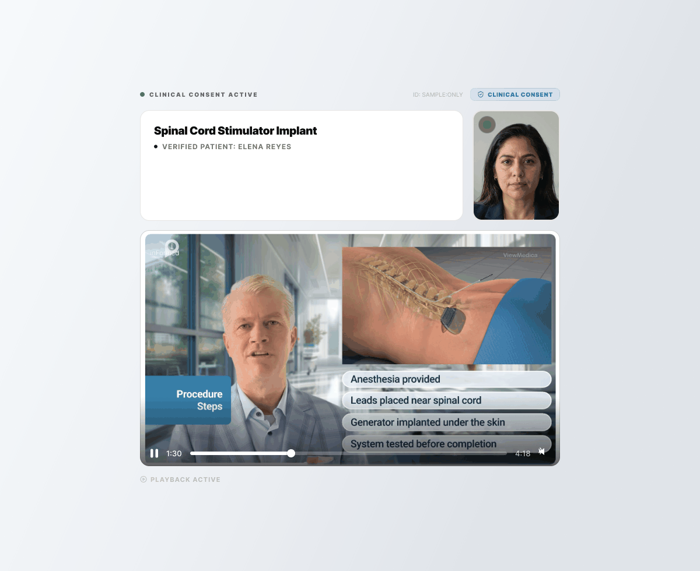
The constraint
Two people read this session, and they want opposite things
The first reader is a patient about to have something implanted in their spine. They are nervous, often alone, often on a phone, and if this feels like a hoop to jump through they will click through it the way everyone clicks through a terms of service.
The second reader shows up years later. A compliance officer, a records request, a plaintiff's attorney. That reader does not care how the session felt. They care whether the patient really watched, whether they were actually there, and whether the artifact can be trusted.
The temptation is to serve the second reader quietly. Track attention in the background. Record without dwelling on it. Keep the patient comfortable by not mentioning the machinery.
That is the version I did not want to build. A patient who finds out afterward that their face was analyzed has been handled, not informed, on a screen whose entire subject is being informed. So the rule for the whole flow became simple. Every mechanism gets announced before it happens, in plain language, and the patient gets to see it working.
Surveillance is not the camera. It is the camera you were not told about.
The setup
Ask before you take, four times over
Nothing is captured until the patient has been told four separate times what is about to happen, and each telling does a different job.
The email sets the conditions before the link is even open. Find a quiet place. Do not do this while driving. That second line is not legal cover, it is the honest consequence of a session that demands your full attention for four minutes.
The identity check states it flatly, above the date-of-birth field rather than below it: your attention and presence will be recorded. A patient who wants out reads that before they have given anything up.
The permission screen separates two things most products bundle. Granting the camera is one act. Agreeing to be recorded is another, with its own checkbox and its own sentence about where the recording goes. Bundling them would have been one fewer tap and a worse consent.
The readiness screen shows the live camera preview next to a plain description of what the tracking does and what it will do to the video if you look away. The patient sees themselves before anything is captured. Nothing about the mechanism is a surprise later, because the surprise is the part that erodes trust.
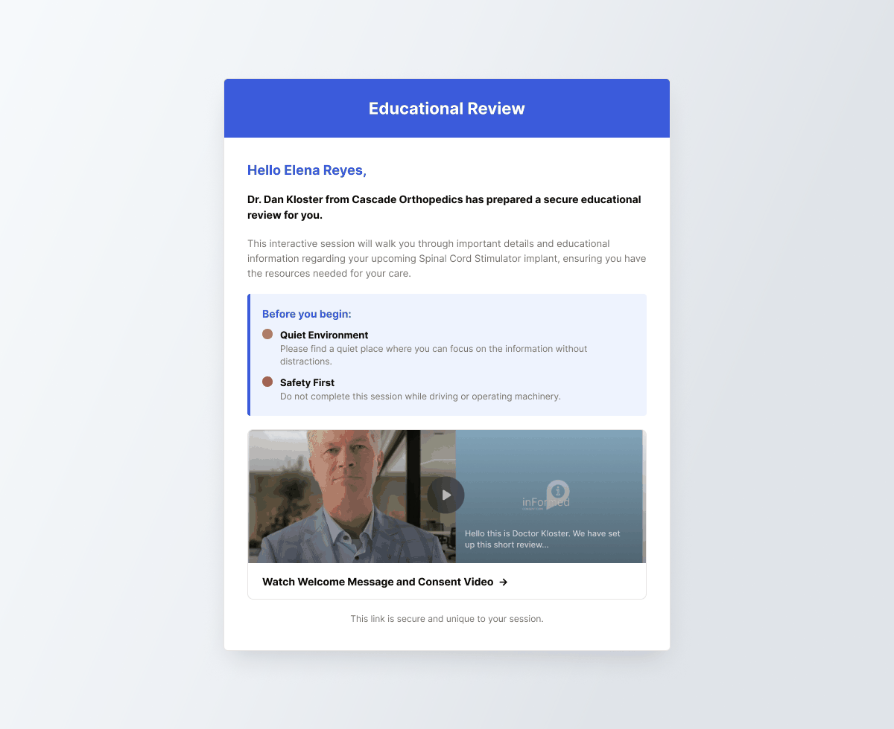
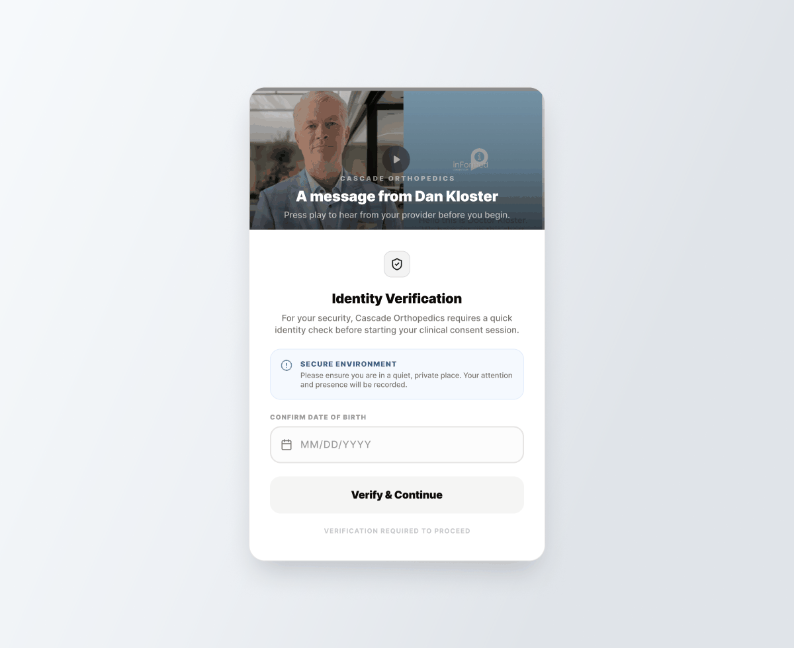
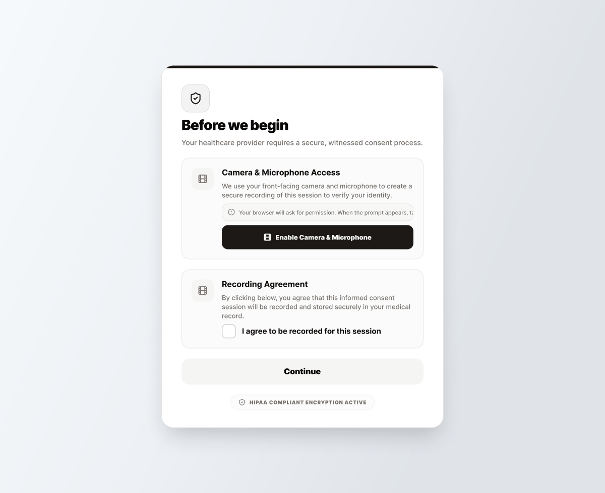
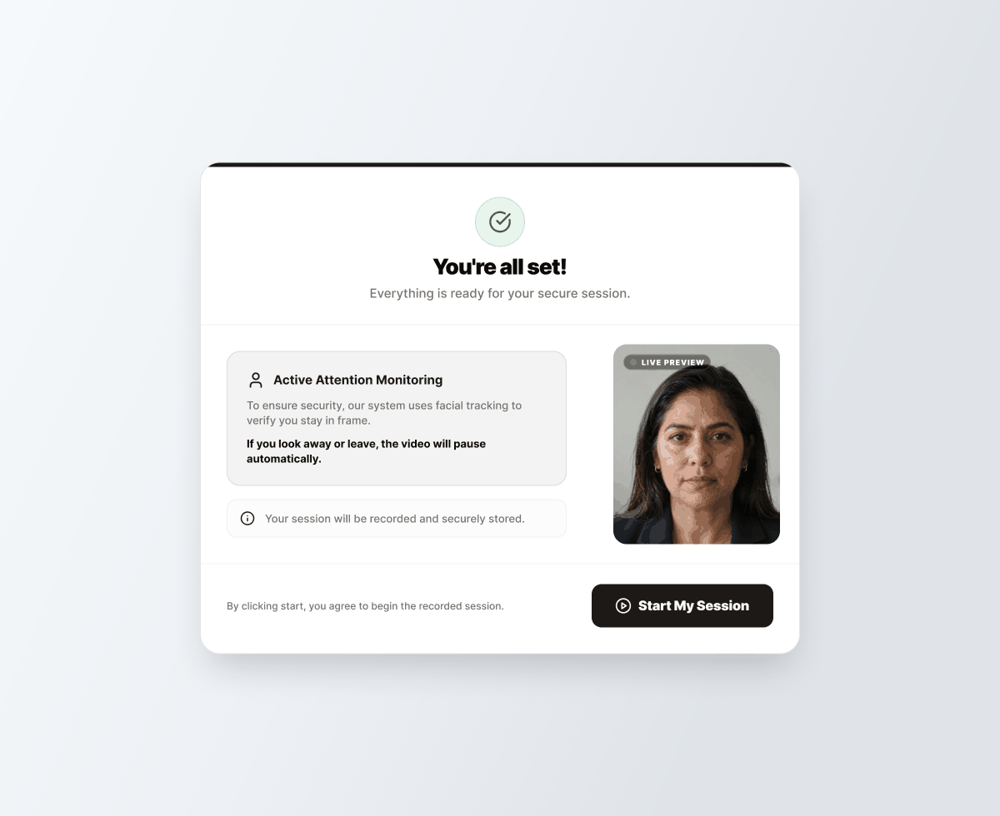
Enforcement
If the system is going to stop you, it has to say why
Three rules run during playback, and all three are the kind of thing that reads as hostile if it arrives without explanation.
No skipping. A high-water mark tracks the furthest point actually watched, so the scrubber cannot be dragged past it. The attempt is logged rather than ignored. The banner that appears is a short sentence, not an error, and it sits over the video where the thumb already is.
Attention. Look away and the video dims and pauses, with the reason on screen and nothing else changed. No lost progress, no scolding, no counter. It resumes when you look back. Because the readiness screen already promised exactly this, the pause reads as the system keeping its word rather than catching you out.
Privacy mode. The patient can stop the camera without abandoning the session. This is the one that matters most to me. Without it, a patient who becomes uncomfortable mid-session has only one exit, which is to quit, and a consent process whose only escape hatch is failure is not a consent process. The indicator turns amber and says recording paused, so the state is never ambiguous in either direction.
Suspend is the honest end of that spectrum. The session stops, says so, and offers one button to resume. Nothing is lost and nothing is hidden.
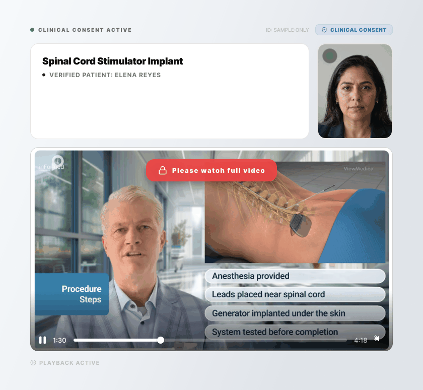
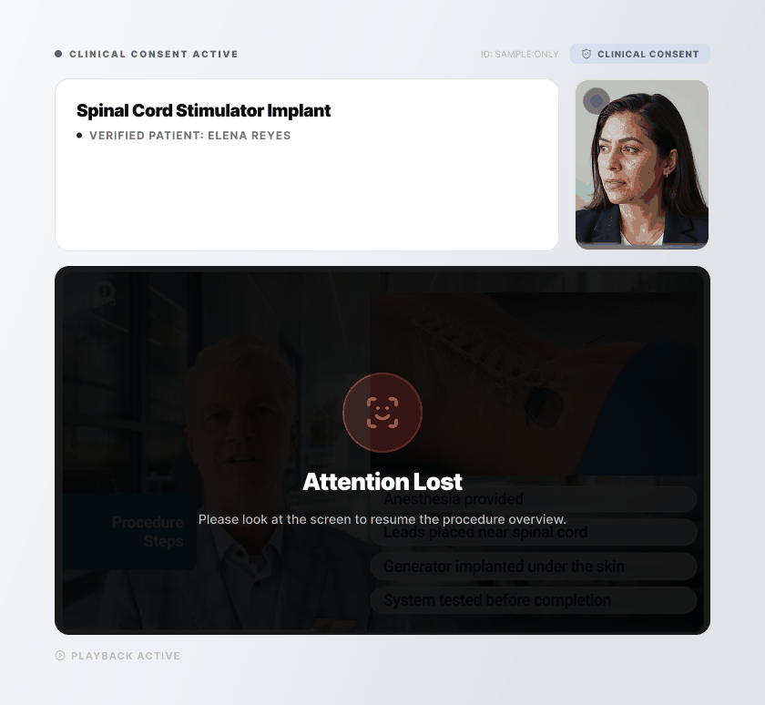
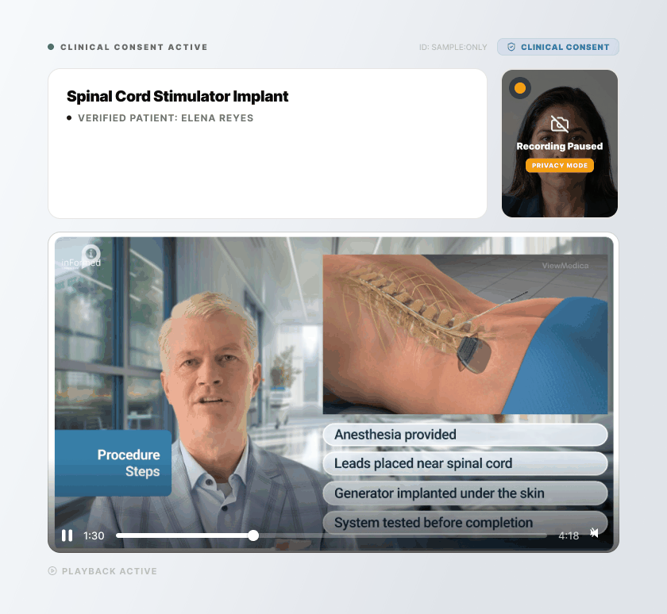
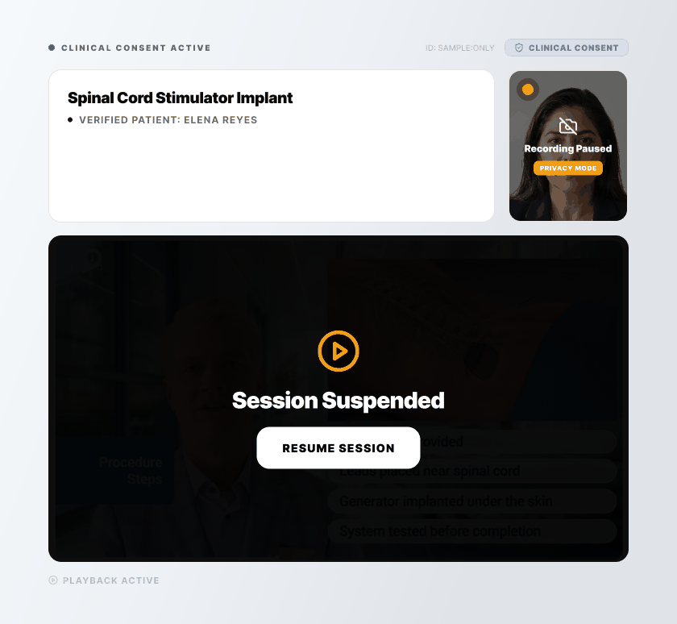
The artifact
Name the moment the record locks
The signature screen is where the two readers finally meet, so it stops being quiet.
Before the signature field there is a line saying the session evidence is secured and the recording is locked. That sentence is for both of them at once. The patient learns that the watching is over. The record gets a stated moment of finality, which is the thing the second reader will want to point at.
The authorization is one sentence in the first person, naming the procedure and the physician, and saying that the patient watched the full presentation and understands the risks, benefits, and alternatives. It is a claim the rest of the session has already earned rather than a box that stands in for the earning.
The session id sits at the top in plain sight, and the footer says where the recording and the signed consent are going. A patient should not have to file a request to learn what was just made about them.
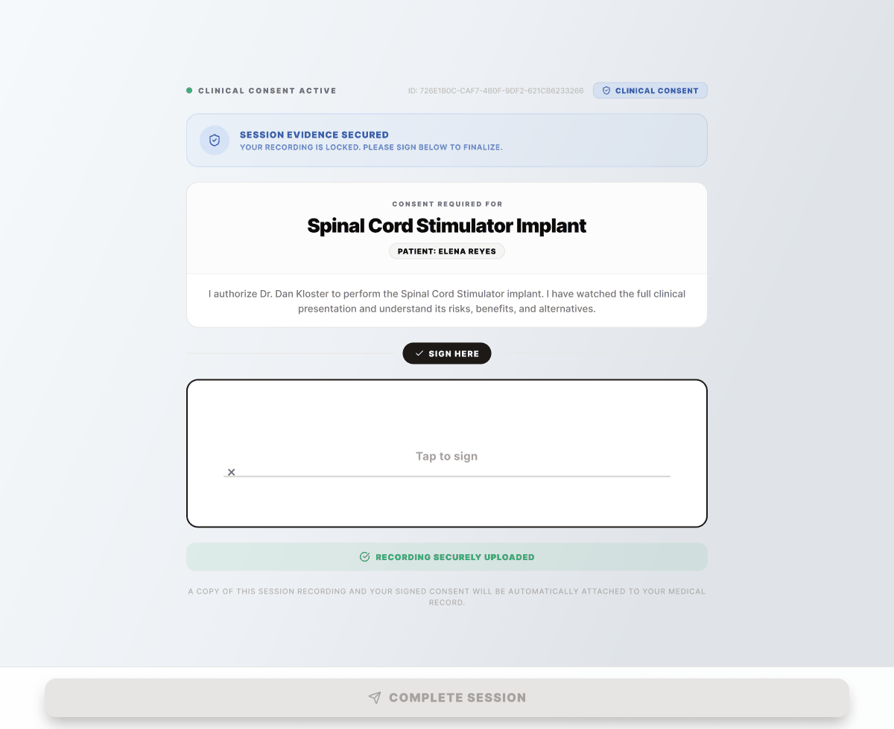
Failure
A session that half worked is not a consent
Proof of viewing is the product. Which means the failure states are not edge cases to tidy up later, they are the part of the product where the claim is either true or a lie.
If the recording could not be captured, the session does not quietly complete without it. It says so, in that language, and refuses to finalize. It also gives the one instruction that actually works, which is to try a different browser or device, because that is what the telemetry says fixes it. A screen that only apologizes wastes the patient's second attempt.
An expired link gets the same treatment. It says the session is no longer active and points at the practice, because the patient cannot fix an expired token and should not be left poking at a retry button hoping.

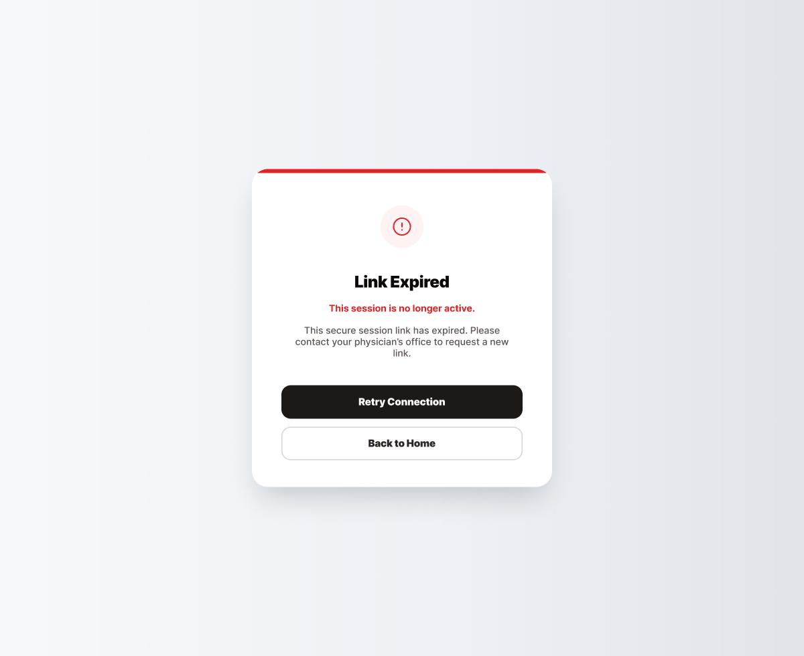
The ending
Two endings, because there are two rooms
The last screen has to work for a patient sitting on their own couch and for a patient holding a practice iPad in an exam room. Those are different endings, and one line of copy carries both: you may close this window, and underneath, on a kiosk, please return this device to the practice staff.
It also says the practitioner has been notified, which is the small thing that keeps a patient from wondering whether any of it registered.
The survey sits before that, optional and skippable, asking one question about how easy the session was with a few tappable reasons. It is deliberately not a satisfaction score. The thing worth measuring here is friction, because friction is what stops a nervous patient from finishing, and finishing is the whole point.
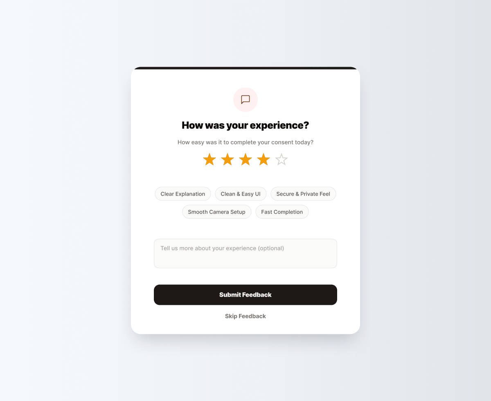
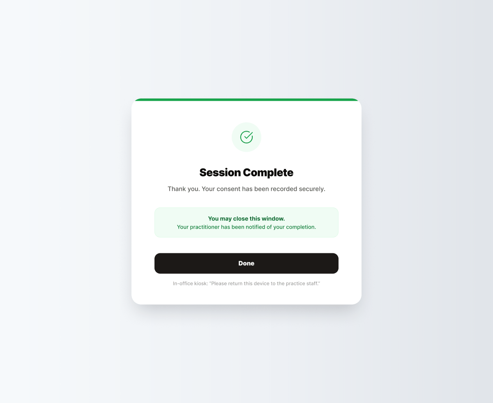
Building something that has to be trusted while it watches?
Attention tracking, recording, enforcement. The mechanism is rarely the hard part. Telling the person what you are doing, in a way that keeps them going, is. Tell me what you are working on.
Start the conversation